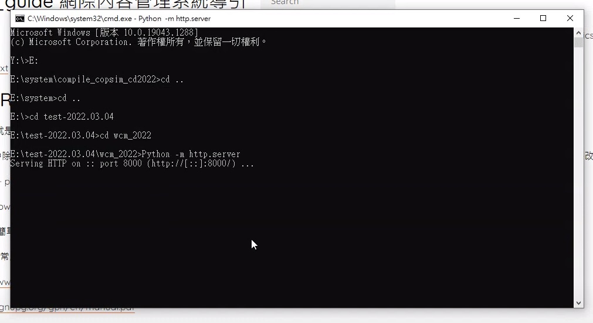
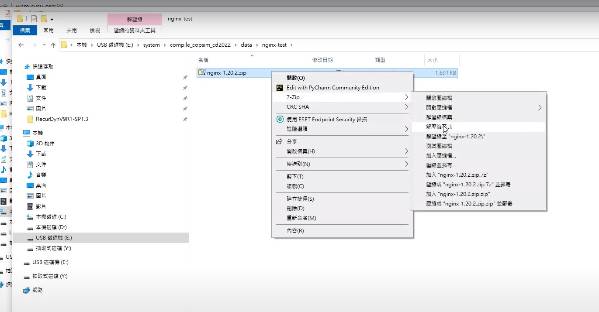

Putty & SSH & Key設定 <<
Previous nginx 設定
操作影片：https://youtu.be/LSE6rWOk46g
操作程序。
1.在黑窗中輸入指令「Pythin -m http.server」

2.到老師的校用檔案下載區下載「nginx-1.20.2.zip」程式
3.將「nginx-1.20.2.zip」放至可攜裝置內解壓縮

4.進入「nginx-1.20.2」資料夾
5.進入「conf」資料夾

6.將「nginx.conf」檔案拖入SciTE編輯器中
7.找到程式中有一列內容為「server{」的程式列，在「server{」底下的「listen 80;」底下加入一行新程式碼「listen [::]:80;」。
8.確認在剛剛新加的程式碼「listen [::]:80;」的下一行程式碼為「server_name localhost」，
server_name後面必須得為localhost。

9.存檔
10.開啟「nginx.exe」程式
11.將「公用網路，例如機場和咖啡廳網路(這些網路的安全性通常比較低或沒有任何安全性，因此不建議使用)(U)」選項打勾，之後按允許存取。
12.進入「本機磁碟(C:)」底下的「2021_cadlab_portable」資料夾
13.進入「data」資料夾，將「ProcessExplorer」複製到可攜裝置中
14.進入「ProcessExplorer」資料夾，開啟「procexp64.exe」程式，確認剛剛執行的「nginx.exe」程式是否有確實執行。
15.確認Proxy設定，
在「不要為開頭為下列項目的位址使用Proxy伺服器。請使用分號(;)來分隔每個項目。」底下欄位輸入localhost，
否則在網頁上執行的時候，系統會用Proxy代理主機的localhost而非你當前裝置的localhost執行。

16.在網址列輸入localhost，當出現下列畫面時即代表設定成功
Putty & SSH & Key設定 <<
Previous